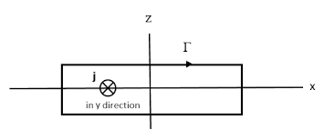

← Back to Concepts
Ampère's Law
Ampère's Law is one of the four Maxwell equations and provides a powerful method for calculating magnetic fields in situations with high symmetry. It relates the circulation of the magnetic field around a closed loop to the current passing through the loop.
Statement of Ampère's Law
🧲 The Integral Law
Ampère's Law states that the line integral of the magnetic field around a closed path is equal to \( \mu_0 \) times the current passing through the area bounded by the path:
\[ \oint \vec{B} \cdot d\vec{l} = \mu_0 I_{enc} \]
Where:
\( \oint \vec{B} \cdot d\vec{l} \) is the line integral of the magnetic field around a closed path
\( \mu_0 \) is the permeability of free space (4π × 10⁻⁷ T⋅m/A)
\( I_{enc} \) is the total current enclosed by the path

Diagram showing a closed path and the current enclosed by it.
Key Features of Ampère's Law
Symmetry Requirements
High Symmetry: Works best when the current distribution has symmetryKnown Field Direction: Field direction must be predictable from symmetryConstant Magnitude: Field magnitude should be constant along the integration pathParallel or Perpendicular: Field should be either parallel or perpendicular to the path
🔬 Symmetry Considerations
Ampère's Law is most effective when:
Cylindrical Symmetry: Long straight wires, coaxial cablesPlanar Symmetry: Current sheets, parallel plate conductorsSpherical Symmetry: Spherical current distributionsTranslational Symmetry: Infinite current sheets or wires
Advantages Over Biot-Savart
No Integration: Avoids complex vector integralsSymmetry Exploitation: Uses geometric symmetry to simplify calculationsDirect Calculation: Often gives results directly without intermediate stepsConceptual Clarity: Emphasizes the relationship between current and field circulation
Applications of Ampère's Law
⚡ Ideal Applications
Ampère's Law is particularly useful for:
Long Straight Wires: Current-carrying conductors with cylindrical symmetryCoaxial Cables: Concentric cylindrical conductorsCurrent Sheets: Planar current distributionsSolenoids: Long coils with many turnsToroids: Ring-shaped solenoids
Example: Magnetic Field of a Long Straight Wire
Problem: Calculate the magnetic field at a distance \( r \) from a long straight wire carrying current \( I \).
Step 1: Choose Amperian Loop
Use a circular path of radius \( r \) centered on the wire:
\[ \oint \vec{B} \cdot d\vec{l} = B(2\pi r) \]
Step 2: Apply Ampère's Law
The enclosed current is \( I \):
\[ B(2\pi r) = \mu_0 I \]
Step 3: Solve for B
The magnetic field is:
\[ B = \frac{\mu_0 I}{2\pi r} \]
Step 4: Direction
The field circulates around the wire according to the right-hand rule.
Example: Magnetic Field Inside a Solenoid
Problem: Calculate the magnetic field inside a long solenoid with \( n \) turns per unit length carrying current \( I \).
Step 1: Choose Amperian Loop
Use a rectangular loop with one side inside the solenoid:
\[ \oint \vec{B} \cdot d\vec{l} = BL \]
Step 2: Calculate Enclosed Current
The enclosed current is \( nLI \):
\[ BL = \mu_0 nLI \]
Step 3: Solve for B
The magnetic field inside is:
\[ B = \mu_0 nI \]
Limitations and Considerations
⚠️ Important Limitations
Symmetry Required: Only works for highly symmetric current distributionsSteady Currents: Applies only to steady (DC) currentsField Direction: Requires knowledge of field direction from symmetryComplex Geometries: Not suitable for arbitrary current distributionsDisplacement Current: Original form doesn't include time-varying electric fields
Relationship to Other Laws
Connection to Biot-Savart Law
Consistency: Both laws give the same results for the same problemsDifferent Approaches: Ampère's Law uses symmetry, Biot-Savart uses direct integrationComplementary: Each is better suited for different problem types
Quick Quiz: Ampère's Law
1. What does Ampère's Law relate?
Magnetic field circulation to enclosed current
Electric field to charge
Force to acceleration
Energy to power
2. When is Ampère's Law most useful?
For arbitrary current distributions
For symmetric current distributions
For time-varying currents
For magnetic materials only
3. What type of integration does Ampère's Law use?
Line integral around a closed path
Surface integral over an area
Volume integral over a region
Point evaluation at a specific location
Key Takeaways
Symmetry-Based: Ampère's Law works best with symmetric current distributionsCirculation Concept: Relates magnetic field circulation to enclosed currentPowerful Tool: Often simpler than Biot-Savart for symmetric casesMaxwell Equation: One of the four fundamental equations of electromagnetismComplementary: Works well with Biot-Savart Law for different problem types